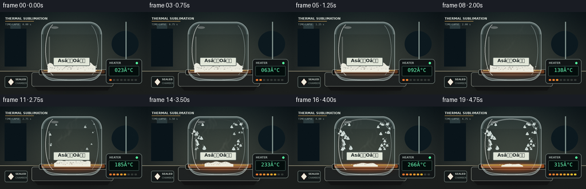
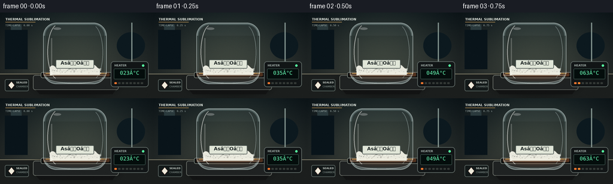

CODING AGENTS AS PIXEL WORLD MODELS
traex/GPT-5.6-Sol · phygen_120
点击播放 · 原生 RGB 像素
此结果可播放，但该运行尚未通过最终提交审核。页面展示不代表评测通过。
逐轮保存的候选
回放视频、检查图与代码变化。
每份候选均可单独播放。实际图片检查记录在下方工具轨迹中。
候选 01播放与检查图
点击播放 · 原生 RGB 像素

展开代码变化
--- 上一保存版本
+++ 本次保存版本
@@ -0,0 +1,241 @@
+from pathlib import Path
+import math
+import numpy as np
+from PIL import Image, ImageDraw, ImageFont, ImageFilter
+import artifact_io
+
+W, H, N = 256, 144, 20
+S = 4
+SW, SH = W*S, H*S
+ROOT = Path(__file__).resolve().parent
+FONT = '/usr/share/fonts/truetype/dejavu/DejaVuSans.ttf'
+FONT_B = '/usr/share/fonts/truetype/dejavu/DejaVuSans-Bold.ttf'
+MONO = '/usr/share/fonts/truetype/dejavu/DejaVuSansMono.ttf'
+
+def fnt(path, size): return ImageFont.truetype(path, size*S)
+def sc(v): return int(round(v*S))
+def pts(seq): return [(sc(x), sc(y)) for x,y in seq]
+
+def gradient_bg():
+ y, x = np.mgrid[0:SH, 0:SW]
+ # cool shadowed laboratory, warm focused bench area
+ top = np.array([15, 27, 33.], float)
+ bot = np.array([48, 53, 51.], float)
+ t = (y/(SH-1))[...,None]
+ a = top*(1-t)+bot*t
+ glow = np.exp(-(((x-SW*.50)/(SW*.40))**2 + ((y-SH*.46)/(SH*.55))**2))
+ a += glow[...,None]*np.array([25,23,14.])
+ # vignette
+ vig = 1 - .24*((x-SW/2)/(SW/2))**2 - .10*((y-SH/2)/(SH/2))**2
+ a *= vig[...,None]
+ rng = np.random.default_rng(123)
+ a += rng.normal(0, 1.1, a.shape[:2])[...,None]
+ return Image.fromarray(np.uint8(np.clip(a,0,255)), 'RGB')
+
+BASE = gradient_bg()
+
+def chamber_mask():
+ m = Image.new('L',(SW,SH),0); d=ImageDraw.Draw(m)
+ d.rounded_rectangle((sc(73),sc(18),sc(177),sc(119)),radius=sc(21),fill=255)
+ # Flatten beneath shoulders like a laboratory sublimation vessel
+ d.rectangle((sc(73),sc(40),sc(177),sc(108)),fill=255)
+ return m
+CMASK = chamber_mask()
+
+def draw_crystal(draw, cx, cy, r, alpha=210, outline=(218,235,232,220)):
+ # angular frost-like arsenic oxide deposit
+ ang = -math.pi/2
+ q=[]
+ for j in range(6):
+ rr = r * ([1,.58,.9,.62,.82,.54][j])
+ aa = ang + j*math.pi/3
+ q.append((sc(cx+rr*math.cos(aa)),sc(cy+rr*math.sin(aa))))
+ fill=(226,237,232,alpha)
+ draw.polygon(q,fill=fill)
+ draw.line(q+[q[0]],fill=outline,width=max(1,sc(.45)))
+ draw.line((sc(cx-r*.20),sc(cy+r*.45),sc(cx+r*.22),sc(cy-r*.50)),fill=(250,255,252,min(240,alpha+20)),width=max(1,sc(.35)))
+
+def frame(i):
+ p=i/(N-1)
+ # smooth physical response: stable at first, then sublimation accelerates
+ active=max(0.0,(p-.22)/.78)
+ active=active*active*(3-2*active)
+ im=BASE.copy().convert('RGBA')
+ d=ImageDraw.Draw(im,'RGBA')
+
+ # defocused lab shapes and tiled bench line
+ d.rectangle((0,sc(103),SW,SH),fill=(27,30,29,255))
+ d.line((0,sc(103),SW,sc(103)),fill=(149,143,119,90),width=sc(1))
+ d.rectangle((sc(8),sc(29),sc(46),sc(95)),fill=(9,20,26,95))
+ d.rectangle((sc(18),sc(20),sc(36),sc(29)),fill=(42,57,60,85))
+ d.ellipse((sc(195),sc(33),sc(242),sc(78)),fill=(12,25,31,80))
+ d.line((sc(220),sc(17),sc(220),sc(103)),fill=(128,145,140,25),width=sc(2))
+
+ # soft vessel shadow on bench
+ shadow=Image.new('RGBA',(SW,SH),(0,0,0,0)); sd=ImageDraw.Draw(shadow)
+ sd.ellipse((sc(55),sc(104),sc(199),sc(135)),fill=(0,0,0,145))
+ shadow=shadow.filter(ImageFilter.GaussianBlur(sc(7)))
+ im.alpha_composite(shadow)
+
+ # hot plate body
+ d=ImageDraw.Draw(im,'RGBA')
+ d.rounded_rectangle((sc(55),sc(105),sc(198),sc(130)),radius=sc(4),fill=(31,34,34,255),outline=(112,117,110,180),width=sc(1))
+ d.polygon(pts([(60,130),(193,130),(188,137),(66,137)]),fill=(18,19,19,255))
+ d.rounded_rectangle((sc(68),sc(100),sc(187),sc(110)),radius=sc(3),fill=(15,17,17,255),outline=(121,128,120,180),width=sc(1))
+ # heater glow increases, diffuse and restrained
+ glow=Image.new('RGBA',(SW,SH),(0,0,0,0)); gd=ImageDraw.Draw(glow)
+ glow_a=int(25+130*p)
+ gd.ellipse((sc(76),sc(97),sc(180),sc(115)),fill=(255,95,20,glow_a))
+ glow=glow.filter(ImageFilter.GaussianBlur(sc(6)))
+ im.alpha_composite(glow)
+ d=ImageDraw.Draw(im,'RGBA')
+ d.rounded_rectangle((sc(72),sc(101),sc(183),sc(107)),radius=sc(2),fill=(75+int(70*p),47+int(25*p),30,255))
+ d.line((sc(76),sc(102),sc(178),sc(102)),fill=(247,194+int(35*p),105,65+int(130*p)),width=sc(1))
+
+ # chamber interior tint and glass volume
+ interior=Image.new('RGBA',(SW,SH),(0,0,0,0)); idr=ImageDraw.Draw(interior)
+ idr.rounded_rectangle((sc(73),sc(18),sc(177),sc(119)),radius=sc(21),fill=(152,179,178,19),outline=(202,225,222,90),width=sc(2))
+ idr.rectangle((sc(73),sc(39),sc(177),sc(104)),fill=(115,145,146,11))
+ im.alpha_composite(interior)
+
+ # white starting powder bed, shrinking and roughening
+ layer=Image.new('RGBA',(SW,SH),(0,0,0,0)); arr=np.zeros((SH,SW),dtype=np.uint8)
+ yy,xx=np.mgrid[0:SH,0:SW]; X=xx/S; Y=yy/S
+ # amount shrinks from broad 16px mound to sparse residue
+ amount=1-.84*active
+ surface = 103 - 13*amount
+ width=42*(.35+.65*amount)
+ center=125+2*math.sin(p*1.2)
+ # mound boundary with organic bumps
+ top = surface - 4*amount*np.exp(-((X-center)/17)**2) - 2.2*amount*np.sin((X-82)*.36)
+ inside=(Y>=top)&(Y<=105.5)&(np.abs(X-center)<width)
+ # edge taper shape
+ inside &= (Y > top + np.maximum(0,(np.abs(X-center)-width+7)*.35))
+ rng=np.random.default_rng(700+i)
+ noise=rng.random((SH,SW))
+ arr[inside]=np.uint8(np.clip(230 + noise[inside]*24,0,255))
+ powder=Image.fromarray(arr,'L').filter(ImageFilter.GaussianBlur(sc(.18)))
+ pd=Image.new('RGBA',(SW,SH),(242,242,230,0)); pd.putalpha(powder)
+ layer.alpha_composite(pd)
+ ld=ImageDraw.Draw(layer,'RGBA')
+ # persistent granules / facets on mound
+ grains=int(64*amount+8)
+ rg=np.random.default_rng(900)
+ for k in range(grains):
+ gx=center+rg.normal(0,width*.47); gx=np.clip(gx,83,168)
+ gy=103-rg.random()*(9*amount+1)-3*amount*math.exp(-((gx-center)/19)**2)
+ r=rg.uniform(.35,1.25)*(0.6+0.4*amount)
+ col=(255,255,245,int(110+100*rg.random()))
+ ld.ellipse((sc(gx-r),sc(gy-r*.55),sc(gx+r),sc(gy+r*.55)),fill=col)
+ # amber shadow immediately beneath hot powder at late phase
+ ld.line((sc(87),sc(105),sc(168),sc(105)),fill=(226,131,48,int(30+90*p)),width=sc(1))
+ layer.putalpha(Image.composite(layer.getchannel('A'),Image.new('L',(SW,SH),0),CMASK))
+ im.alpha_composite(layer)
+
+ # rising vapor plumes: appear transiently as sublimation accelerates
+ vapor_strength=math.sin(math.pi*active)**.65 if active>0 else 0
+ vapor=Image.new('RGBA',(SW,SH),(0,0,0,0)); vd=ImageDraw.Draw(vapor,'RGBA')
+ for k in range(8):
+ phase=k*.91
+ x0=104+k*6.0
+ rise=(active*58 + k*7.3) % 68
+ y0=100-rise
+ wiggle=math.sin(i*.37+phase)*5
+ curve=[]
+ for j in range(18):
+ yy0=y0-j*1.6
+ xx0=x0+wiggle*math.sin(j*.24+phase)+2.5*math.sin(j*.45+i*.18+k)
+ curve.append((sc(xx0),sc(yy0)))
+ alpha=int((22+45*active)*vapor_strength*(.65+.35*math.sin(phase+2)**2))
+ if alpha>1:
+ vd.line(curve,fill=(235,239,224,alpha),width=sc(1.2+1.2*active))
+ vapor=vapor.filter(ImageFilter.GaussianBlur(sc(1.5)))
+ vapor.putalpha(Image.composite(vapor.getchannel('A'),Image.new('L',(SW,SH),0),CMASK))
+ im.alpha_composite(vapor)
+
+ # condensed crystalline deposit on the cooler upper wall; deterministic reveal
+ crystals=Image.new('RGBA',(SW,SH),(0,0,0,0)); cd=ImageDraw.Draw(crystals,'RGBA')
+ rc=np.random.default_rng(441)
+ candidates=[]
+ for k in range(36):
+ # Mostly upper shoulder, where vapor recondenses
+ side=-1 if k%2==0 else 1
+ cx=125+side*rc.uniform(24,43)+rc.normal(0,2)
+ cy=rc.uniform(30,76)
+ r=rc.uniform(1.3,4.0)
+ candidates.append((cx,cy,r,rc.uniform(.12,.94)))
+ for cx,cy,r,threshold in candidates:
+ birth=.20+.64*threshold
+ q=np.clip((active-birth)/.18,0,1)
+ if q>0:
+ draw_crystal(cd,cx,cy,r*(.45+.55*q),int(80+150*q))
+ # tiny branching needles
+ if q>.55:
+ cd.line((sc(cx),sc(cy),sc(cx+(cx-125)*.10),sc(cy-r*1.65)),fill=(242,250,247,int(95*q)),width=max(1,sc(.4)))
+ # subtle final frosty collar near top
+ if active>.72:
+ a=int(100*(active-.72)/.28)
+ cd.arc((sc(83),sc(21),sc(167),sc(61)),190,350,fill=(229,242,239,a),width=sc(2))
+ crystals.putalpha(Image.composite(crystals.getchannel('A'),Image.new('L',(SW,SH),0),CMASK))
+ im.alpha_composite(crystals)
+
+ # glass front edges, rim, specular highlights
+ glass=Image.new('RGBA',(SW,SH),(0,0,0,0)); gd=ImageDraw.Draw(glass,'RGBA')
+ gd.rounded_rectangle((sc(72),sc(17),sc(178),sc(120)),radius=sc(22),outline=(220,238,236,135),width=sc(1.2))
+ gd.rounded_rectangle((sc(75),sc(20),sc(175),sc(117)),radius=sc(19),outline=(101,137,139,60),width=sc(1))
+ gd.arc((sc(79),sc(20),sc(114),sc(112)),103,255,fill=(255,255,250,145),width=sc(1.2))
+ gd.arc((sc(137),sc(21),sc(172),sc(113)),-72,69,fill=(225,246,245,88),width=sc(1))
+ gd.line((sc(86),sc(43),sc(86),sc(92)),fill=(255,255,250,55),width=sc(2))
+ gd.ellipse((sc(89),sc(25),sc(102),sc(29)),fill=(255,255,255,65))
+ # seam and thick base
+ gd.line((sc(77),sc(105),sc(173),sc(105)),fill=(215,232,229,100),width=sc(1))
+ gd.arc((sc(78),sc(99),sc(172),sc(119)),0,180,fill=(244,251,246,130),width=sc(1))
+ im.alpha_composite(glass)
+
+ d=ImageDraw.Draw(im,'RGBA')
+ # chamber label decal
+ d.rounded_rectangle((sc(93),sc(79),sc(157),sc(94)),radius=sc(2),fill=(225,230,216,205),outline=(78,88,84,180),width=sc(1))
+ label='AsâOâ'
+ font=fnt(FONT_B,8)
+ box=d.textbbox((0,0),label,font=font)
+ d.text((sc(125)-(box[2]-box[0])//2,sc(80)),label,font=font,fill=(30,38,37,235))
+
+ # temperature instrument on right with glowing digital readout
+ d.rounded_rectangle((sc(185),sc(82),sc(248),sc(125)),radius=sc(5),fill=(17,21,22,240),outline=(100,111,107,190),width=sc(1))
+ d.text((sc(191),sc(86)),'HEATER',font=fnt(FONT_B,4.7),fill=(165,178,173,220))
+ d.ellipse((sc(237),sc(87),sc(241),sc(91)),fill=(85,240,158,220))
+ d.rounded_rectangle((sc(190),sc(94),sc(243),sc(112)),radius=sc(2),fill=(4,13,12,255),outline=(51,72,66,255),width=sc(1))
+ temp=23 + int(round(292*(p**1.08)))
+ val=f'{temp:03d}°C'
+ vf=fnt(MONO,9)
+ bb=d.textbbox((0,0),val,font=vf)
+ d.text((sc(216.5)-(bb[2]-bb[0])//2,sc(96)),val,font=vf,fill=(102,248,179,255),stroke_width=0)
+ # progress LEDs
+ for k in range(8):
+ on=k <= int(p*7+.001)
+ c=(237,119+int(80*k/7),48,235) if on else (52,57,54,255)
+ d.rounded_rectangle((sc(191+k*6.3),sc(117),sc(195+k*6.3),sc(120)),radius=sc(1),fill=c)
+
+ # top-left restrained documentary title / time-lapse cue
+ d.text((sc(9),sc(8)),'THERMAL SUBLIMATION',font=fnt(FONT_B,5.5),fill=(223,229,221,225))
+ d.line((sc(9),sc(16),sc(59),sc(16)),fill=(211,165,94,170),width=sc(.7))
+ tsec=i/4
+ d.text((sc(9),sc(19)),f'TIME-LAPSE {tsec:04.2f} s',font=fnt(MONO,4.2),fill=(168,182,178,215))
+
+ # safety badge / chemical context, small and unobtrusive
+ d.rounded_rectangle((sc(8),sc(112),sc(48),sc(132)),radius=sc(3),fill=(19,25,25,220),outline=(91,102,98,160),width=sc(1))
+ d.polygon(pts([(14,122),(19,116),(24,122),(19,128)]),fill=(238,235,220,225),outline=(178,73,63,230))
+ d.text((sc(27),sc(115)),'SEALED',font=fnt(FONT_B,4.3),fill=(203,211,204,235))
+ d.text((sc(27),sc(122)),'CHAMBER',font=fnt(FONT,4),fill=(149,164,158,230))
+
+ # downsample with antialias, add very subtle sensor grain
+ out=im.convert('RGB').resize((W,H),Image.Resampling.LANCZOS)
+ ar=np.asarray(out).astype(np.int16)
+ rg=np.random.default_rng(2000+i)
+ ar += rg.normal(0,.55,ar.shape[:2])[...,None].astype(np.int16)
+ return np.uint8(np.clip(ar,0,255))
+
+if __name__=='__main__':
+ frames=np.stack([frame(i) for i in range(N)],axis=0)
+ artifact_io.save(frames, ROOT)
+ print('saved',frames.shape,frames.dtype)
候选 02播放与检查图
点击播放 · 原生 RGB 像素


展开代码变化
--- 上一保存版本
+++ 本次保存版本
@@ -195,7 +195,7 @@
d=ImageDraw.Draw(im,'RGBA')
# chamber label decal
d.rounded_rectangle((sc(93),sc(79),sc(157),sc(94)),radius=sc(2),fill=(225,230,216,205),outline=(78,88,84,180),width=sc(1))
- label='AsâOâ'
+ label='As\u2082O\u2083'
font=fnt(FONT_B,8)
box=d.textbbox((0,0),label,font=font)
d.text((sc(125)-(box[2]-box[0])//2,sc(80)),label,font=font,fill=(30,38,37,235))
@@ -206,7 +206,7 @@
d.ellipse((sc(237),sc(87),sc(241),sc(91)),fill=(85,240,158,220))
d.rounded_rectangle((sc(190),sc(94),sc(243),sc(112)),radius=sc(2),fill=(4,13,12,255),outline=(51,72,66,255),width=sc(1))
temp=23 + int(round(292*(p**1.08)))
- val=f'{temp:03d}°C'
+ val=f'{temp:03d}\u00b0C'
vf=fnt(MONO,9)
bb=d.textbbox((0,0),val,font=vf)
d.text((sc(216.5)-(bb[2]-bb[0])//2,sc(96)),val,font=vf,fill=(102,248,179,255),stroke_width=0)
候选 03播放与检查图
可观测工具轨迹
实际执行的命令与返回图片。
命令 1exit 0
/bin/bash -lc "ls -la && printf '\\n--- prompt.txt ---\\n' && cat prompt.txt && printf '\\n--- GENERATION_RULES.md ---\\n' && cat GENERATION_RULES.md && printf '\\n--- task_spec.json ---\\n' && cat task_spec.json"
命令 2exit 0
/bin/bash -lc "find . -maxdepth 2 -type f -printf '%p\\n' | sort"
命令 3exit 0
/bin/bash -lc "sed -n '1,240p' artifact_io.py"
命令 4exit 0
/bin/bash -lc 'fc-list | head -20'
命令 5exit 0
/bin/bash -lc "cat > generate.py <<'PY'
from pathlib import Path
import math
import numpy as np
from PIL import Image, ImageDraw, ImageFont, ImageFilter
import artifact_io
W, H, N = 256, 144, 20
S = 4
SW, SH = W*S, H*S
ROOT = Path(__file__).resolve().parent
FONT = '/usr/share/fonts/truetype/dejavu/DejaVuSans.ttf'
FONT_B = '/usr/share/fonts/truetype/dejavu/DejaVuSans-Bold.ttf'
MONO = '/usr/share/fonts/truetype/dejavu/DejaVuSansMono.ttf'
def fnt(path, size): return ImageFont.truetype(path, size*S)
def sc(v): return int(round(v*S))
def pts(seq): return [(sc(x), sc(y)) for x,y in seq]
def gradient_bg():
y, x = np.mgrid[0:SH, 0:SW]
# cool shadowed laboratory, warm focused bench area
top = np.array([15, 27, 33.], float)
bot = np.array([48, 53, 51.], float)
t = (y/(SH-1))[...,None]
a = top*(1-t)+bot*t
glow = np.exp(-(((x-SW*.50)/(SW*.40))**2 + ((y-SH*.46)/(SH*.55))**2))
a += glow[...,None]*np.array([25,23,14.])
# vignette
vig = 1 - .24*((x-SW/2)/(SW/2))**2 - .10*((y-SH/2)/(SH/2))**2
a *= vig[...,None]
rng = np.random.default_rng(123)
a += rng.normal(0, 1.1, a.shape[:2])[...,None]
return Image.fromarray(np.uint8(np.clip(a,0,255)), 'RGB')
BASE = gradient_bg()
def chamber_mask():
m = Image.new('L',(SW,SH),0); d=ImageDraw.Draw(m)
d.rounded_rectangle((sc(73),sc(18),sc(177),sc(119)),radius=sc(21),fill=255)
# Flatten beneath shoulders like a laboratory sublimation vessel
d.rectangle((sc(73),sc(40),sc(177),sc(108)),fill=255)
return m
CMASK = chamber_mask()
def draw_crystal(draw, cx, cy, r, alpha=210, outline=(218,235,232,220)):
# angular frost-like arsenic oxide deposit
ang = -math.pi/2
q=[]
for j in range(6):
rr = r * ([1,.58,.9,.62,.82,.54][j])
aa = ang + j*math.pi/3
q.append((sc(cx+rr*math.cos(aa)),sc(cy+rr*math.sin(aa))))
fill=(226,237,232,alpha)
draw.polygon(q,fill=fill)
draw.line(q+[q[0]],fill=outline,width=max(1,sc(.45)))
draw.line((sc(cx-r*.20),sc(cy+r*.45),sc(cx+r*.22),sc(cy-r*.50)),fill=(250,255,252,min(240,alpha+20)),width=max(1,sc(.35)))
def frame(i):
p=i/(N-1)
# smooth physical response: stable at first, then sublimation accelerates
active=max(0.0,(p-.22)/.78)
active=active*active*(3-2*active)
im=BASE.copy().convert('RGBA')
d=ImageDraw.Draw(im,'RGBA')
# defocused lab shapes and tiled bench line
d.rectangle((0,sc(103),SW,SH),fill=(27,30,29,255))
d.line((0,sc(103),SW,sc(103)),fill=(149,143,119,90),width=sc(1))
d.rectangle((sc(8),sc(29),sc(46),sc(95)),fill=(9,20,26,95))
d.rectangle((sc(18),sc(20),sc(36),sc(29)),fill=(42,57,60,85))
d.ellipse((sc(195),sc(33),sc(242),sc(78)),fill=(12,25,31,80))
d.line((sc(220),sc(17),sc(220),sc(103)),fill=(128,145,140,25),width=sc(2))
# soft vessel shadow on bench
shadow=Image.new('RGBA',(SW,SH),(0,0,0,0)); sd=ImageDraw.Draw(shadow)
sd.ellipse((sc(55),sc(104),sc(199),sc(135)),fill=(0,0,0,145))
shadow=shadow.filter(ImageFilter.GaussianBlur(sc(7)))
im.alpha_composite(shadow)
# hot plate body
d=ImageDraw.Draw(im,'RGBA')
d.rounded_rectangle((sc(55),sc(105),sc(198),sc(130)),radius=sc(4),fill=(31,34,34,255),outline=(112,117,110,180),width=sc(1))
d.polygon(pts([(60,130),(193,130),(188,137),(66,137)]),fill=(18,19,19,255))
d.rounded_rectangle((sc(68),sc(100),sc(187),sc(110)),radius=sc(3),fill=(15,17,17,255),outline=(121,128,120,180),width=sc(1))
# heater glow increases, diffuse and restrained
glow=Image.new('RGBA',(SW,SH),(0,0,0,0)); gd=ImageDraw.Draw(glow)
glow_a=int(25+130*p)
gd.ellipse((sc(76),sc(97),sc(180),sc(115)),fill=(255,95,20,glow_a))
glow=glow.filter(ImageFilter.GaussianBlur(sc(6)))
im.alpha_composite(glow)
d=ImageDraw.Draw(im,'RGBA')
d.rounded_rectangle((sc(72),sc(101),sc(183),sc(107)),radius=sc(2),fill=(75+int(70*p),47+int(25*p),30,255))
d.line((sc(76),sc(102),sc(178),sc(102)),fill=(247,194+int(35*p),105,65+int(130*p)),width=sc(1))
# chamber interior tint and glass volume
interior=Image.new('RGBA',(SW,SH),(0,0,0,0)); idr=ImageDraw.Draw(interior)
idr.rounded_rectangle((sc(73),sc(18),sc(177),sc(119)),radius=sc(21),fill=(152,179,178,19),outline=(202,225,222,90),width=sc(2))
idr.rectangle((sc(73),sc(39),sc(177),sc(104)),fill=(115,145,146,11))
im.alpha_composite(interior)
# white starting powder bed, shrinking and roughening
layer=Image.new('RGBA',(SW,SH),(0,0,0,0)); arr=np.zeros((SH,SW),dtype=np.uint8)
yy,xx=np.mgrid[0:SH,0:SW]; X=xx/S; Y=yy/S
# amount shrinks from broad 16px mound to sparse residue
amount=1-.84*active
surface = 103 - 13*amount
width=42*(.35+.65*amount)
center=125+2*math.sin(p*1.2)
# mound boundary with organic bumps
top = surface - 4*amount*np.exp(-((X-center)/17)**2) - 2.2*amount*np.sin((X-82)*.36)
inside=(Y>=top)&(Y<=105.5)&(np.abs(X-center)<width)
# edge taper shape
inside &= (Y > top + np.maximum(0,(np.abs(X-center)-width+7)*.35))
rng=np.random.default_rng(700+i)
noise=rng.random((SH,SW))
arr[inside]=np.uint8(np.clip(230 + noise[inside]*24,0,255))
powder=Image.fromarray(arr,'L').filter(ImageFilter.GaussianBlur(sc(.18)))
pd=Image.new('RGBA',(SW,SH),(242,242,230,0)); pd.putalpha(powder)
layer.alpha_composite(pd)
ld=ImageDraw.Draw(layer,'RGBA')
# persistent granules / facets on mound
grains=int(64*amount+8)
rg=np.random.default_rng(900)
for k in range(grains):
gx=center+rg.normal(0,width*.47); gx=np.clip(gx,83,168)
gy=103-rg.random()*(9*amount+1)-3*amount*math.exp(-((gx-center)/19)**2)
r=rg.uniform(.35,1.25)*(0.6+0.4*amount)
col=(255,255,245,int(110+100*rg.random()))
ld.ellipse((sc(gx-r),sc(gy-r*.55),sc(gx+r),sc(gy+r*.55)),fill=col)
# amber shadow immediately beneath hot powder at late phase
ld.line((sc(87),sc(105),sc(168),sc(105)),fill=(226,131,48,int(30+90*p)),width=sc(1))
layer.putalpha(Image.composite(layer.getchannel('A'),Image.new('L',(SW,SH),0),CMASK))
im.alpha_composite(layer)
# rising vapor plumes: appear transiently as sublimation accelerates
vapor_strength=math.sin(math.pi*active)**.65 if active>0 else 0
vapor=Image.new('RGBA',(SW,SH),(0,0,0,0)); vd=ImageDraw.Draw(vapor,'RGBA')
for k in range(8):
phase=k*.91
x0=104+k*6.0
rise=(active*58 + k*7.3) % 68
y0=100-rise
wiggle=math.sin(i*.37+phase)*5
curve=[]
for j in range(18):
yy0=y0-j*1.6
xx0=x0+wiggle*math.sin(j*.24+phase)+2.5*math.sin(j*.45+i*.18+k)
curve.append((sc(xx0),sc(yy0)))
alpha=int((22+45*active)*vapor_strength*(.65+.35*math.sin(phase+2)**2))
if alpha>1:
vd.line(curve,fill=(235,239,224,alpha),width=sc(1.2+1.2*active))
vapor=vapor.filter(ImageFilter.GaussianBlur(sc(1.5)))
vapor.putalpha(Image.composite(vapor.getchannel('A'),Image.new('L',(SW,SH),0),CMASK))
im.alpha_composite(vapor)
# condensed crystalline deposit on the cooler upper wall; deterministic reveal
crystals=Image.new('RGBA',(SW,SH),(0,0,0,0)); cd=ImageDraw.Draw(crystals,'RGBA')
rc=np.random.default_rng(441)
candidates=[]
for k in range(36):
# Mostly upper shoulder, where vapor recondenses
side=-1 if k%2==0 else 1
cx=125+side*rc.uniform(24,43)+rc.normal(0,2)
cy=rc.uniform(30,76)
r=rc.uniform(1.3,4.0)
candidates.append((cx,cy,r,rc.uniform(.12,.94)))
for cx,cy,r,threshold in candidates:
birth=.20+.64*threshold
q=np.clip((active-birth)/.18,0,1)
if q>0:
draw_crystal(cd,cx,cy,r*(.45+.55*q),int(80+150*q))
# tiny branching needles
if q>.55:
cd.line((sc(cx),sc(cy),sc(cx+(cx-125)*.10),sc(cy-r*1.65)),fill=(242,250,247,int(95*q)),width=max(1,sc(.4)))
# subtle final frosty collar near top
if active>.72:
a=int(100*(active-.72)/.28)
cd.arc((sc(83),sc(21),sc(167),sc(61)),190,350,fill=(229,242,239,a),width=sc(2))
crystals.putalpha(Image.composite(crystals.getchannel('A'),Image.new('L',(SW,SH),0),CMASK))
im.alpha_composite(crystals)
# glass front edges, rim, specular highlights
glass=Image.new('RGBA',(SW,SH),(0,0,0,0)); gd=ImageDraw.Draw(glass,'RGBA')
gd.rounded_rectangle((sc(72),sc(17),sc(178),sc(120)),radius=sc(22),outline=(220,238,236,135),width=sc(1.2))
gd.rounded_rectangle((sc(75),sc(20),sc(175),sc(117)),radius=sc(19),outline=(101,137,139,60),width=sc(1))
gd.arc((sc(79),sc(20),sc(114),sc(112)),103,255,fill=(255,255,250,145),width=sc(1.2))
gd.arc((sc(137),sc(21),sc(172),sc(113)),-72,69,fill=(225,246,245,88),width=sc(1))
gd.line((sc(86),sc(43),sc(86),sc(92)),fill=(255,255,250,55),width=sc(2))
gd.ellipse((sc(89),sc(25),sc(102),sc(29)),fill=(255,255,255,65))
# seam and thick base
gd.line((sc(77),sc(105),sc(173),sc(105)),fill=(215,232,229,100),width=sc(1))
gd.arc((sc(78),sc(99),sc(172),sc(119)),0,180,fill=(244,251,246,130),width=sc(1))
im.alpha_composite(glass)
d=ImageDraw.Draw(im,'RGBA')
# chamber label decal
d.rounded_rectangle((sc(93),sc(79),sc(157),sc(94)),radius=sc(2),fill=(225,230,216,205),outline=(78,88,84,180),width=sc(1))
label='AsâOâ'
font=fnt(FONT_B,8)
box=d.textbbox((0,0),label,font=font)
d.text((sc(125)-(box[2]-box[0])//2,sc(80)),label,font=font,fill=(30,38,37,235))
# temperature instrument on right with glowing digital readout
d.rounded_rectangle((sc(185),sc(82),sc(248),sc(125)),radius=sc(5),fill=(17,21,22,240),outline=(100,111,107,190),width=sc(1))
d.text((sc(191),sc(86)),'HEATER',font=fnt(FONT_B,4.7),fill=(165,178,173,220))
d.ellipse((sc(237),sc(87),sc(241),sc(91)),fill=(85,240,158,220))
d.rounded_rectangle((sc(190),sc(94),sc(243),sc(112)),radius=sc(2),fill=(4,13,12,255),outline=(51,72,66,255),width=sc(1))
temp=23 + int(round(292*(p**1.08)))
val=f'{temp:03d}°C'
vf=fnt(MONO,9)
bb=d.textbbox((0,0),val,font=vf)
d.text((sc(216.5)-(bb[2]-bb[0])//2,sc(96)),val,font=vf,fill=(102,248,179,255),stroke_width=0)
# progress LEDs
for k in range(8):
on=k <= int(p*7+.001)
c=(237,119+int(80*k/7),48,235) if on else (52,57,54,255)
d.rounded_rectangle((sc(191+k*6.3),sc(117),sc(195+k*6.3),sc(120)),radius=sc(1),fill=c)
# top-left restrained documentary title / time-lapse cue
d.text((sc(9),sc(8)),'THERMAL SUBLIMATION',font=fnt(FONT_B,5.5),fill=(223,229,221,225))
d.line((sc(9),sc(16),sc(59),sc(16)),fill=(211,165,94,170),width=sc(.7))
tsec=i/4
d.text((sc(9),sc(19)),f'TIME-LAPSE {tsec:04.2f} s',font=fnt(MONO,4.2),fill=(168,182,178,215))
# safety badge / chemical context, small and unobtrusive
d.rounded_rectangle((sc(8),sc(112),sc(48),sc(132)),radius=sc(3),fill=(19,25,25,220),outline=(91,102,98,160),width=sc(1))
d.polygon(pts([(14,122),(19,116),(24,122),(19,128)]),fill=(238,235,220,225),outline=(178,73,63,230))
d.text((sc(27),sc(115)),'SEALED',font=fnt(FONT_B,4.3),fill=(203,211,204,235))
d.text((sc(27),sc(122)),'CHAMBER',font=fnt(FONT,4),fill=(149,164,158,230))
# downsample with antialias, add very subtle sensor grain
out=im.convert('RGB').resize((W,H),Image.Resampling.LANCZOS)
ar=np.asarray(out).astype(np.int16)
rg=np.random.default_rng(2000+i)
ar += rg.normal(0,.55,ar.shape[:2])[...,None].astype(np.int16)
return np.uint8(np.clip(ar,0,255))
if __name__=='__main__':
frames=np.stack([frame(i) for i in range(N)],axis=0)
artifact_io.save(frames, ROOT)
print('saved',frames.shape,frames.dtype)
PY
python generate.py"命令 6exit 0
/bin/bash -lc "ls -lh pixels.npz index.html inspection.png frames/*.png | tail -25 && python - <<'PY'
import numpy as np
from PIL import Image
ims=np.stack([np.asarray(Image.open(f'frames/{i:02d}.png')) for i in range(20)])
print('shape',ims.shape,'dtype',ims.dtype,'range',ims.min(),ims.max())
print('mean abs frame deltas',np.abs(np.diff(ims.astype(float),axis=0)).mean((1,2,3)).round(2).tolist())
print('unique frames',len({x.tobytes() for x in ims}))
PY"命令 7exit 0
/bin/bash -lc "grep -n \"label=\\|val=f\" generate.py | cat -v"
保存候选 3 份；完成命令 7 次；可验证图片返回 0 张。原始 API 响应与完整日志保留在本地。